- ដោះស្រាយប្រព័ន្ធសមីការតាមក្រាប
- ដោះស្រាយប្រព័ន្ធសមីការតាមវិធីជំនួស
- ដោះស្រាយប្រព័ន្ធសមីការតាមវិធីបំបាត់
- ដោះស្រាយចំណោទ
សួស្តីប្អូនៗ! នៅក្នុងមេរៀនមុន យើងបានរៀនពីសមីការបន្ទាត់រួចមកហើយ។ ថ្ងៃនេះយើងនឹងសិក្សាពីប្រព័ន្ធសមីការ ដែលមានន័យថាយើងមានបន្ទាត់ពីរ ឫច្រើនជាងនេះ ហើយយើងចង់ដឹងថាតើវាកាត់គ្នាត្រង់ចំណុចណា? តោះ! យើងទៅរៀនទាំងអស់គ្នា។
A. ដោះស្រាយប្រព័ន្ធសមីការតាមក្រាប
ការដោះស្រាយប្រព័ន្ធសមីការតាមក្រាប គឺជាការសង់បន្ទាត់ទាំងពីរនៅលើតម្រុយអ័ក្សកូអរដោនេតែមួយ។ ចំណុចប្រសព្វនៃបន្ទាត់ទាំងពីរ គឺជាចម្លើយនៃប្រព័ន្ធសមីការនោះឯង!
ដោះស្រាយសមីការ \(\displaystyle 2x + y = 2\) ។
១. គិត៖ យើងត្រូវរកឈុតចម្លើយ \(\displaystyle (x,y)\) មួយចំនួន ដើម្បីយកទៅដៅចំណុចសង់ក្រាបបន្ទាត់។
២. ជ្រើសវិធី៖ យើងអាចបំប្លែងសមីការទៅជាទម្រង់ \(\displaystyle y = ax + b\) ដើម្បីងាយស្រួលជំនួសតម្លៃ \(\displaystyle x\) រក \(\displaystyle y\) ។ រួចយើងយកតែពីរចំណុច ក៏អាចសង់បន្ទាត់បានដែរ។
៣. ធ្វើ៖ សមីការមានពីរអញ្ញាត \(\displaystyle x\) និង \(\displaystyle y\) រកឈុតចម្លើយមិនអស់។ យើងបំប្លែងសមីការទៅជា \(\displaystyle y = -2x + 2\) ។ រួចរកតម្លៃ \(\displaystyle y\) តាម \(\displaystyle x\)៖
- បើ \(\displaystyle x = -2\), \(\displaystyle y = -2(-2) + 2 = 6\)
- បើ \(\displaystyle x = -1\), \(\displaystyle y = -2(-1) + 2 = 4\)
- បើ \(\displaystyle x = 0\), \(\displaystyle y = -2(0) + 2 = 2\)
- បើ \(\displaystyle x = 1\), \(\displaystyle y = -2(1) + 2 = 0\)
- បើ \(\displaystyle x = 2\), \(\displaystyle y = -2(2) + 2 = -2\)
ដើម្បីសង់បន្ទាត់ គេយកតែ២ចំណុចក៏បាន៖
| \(\displaystyle x\) | 0 | 1 |
| \(\displaystyle y\) | 2 | 0 |

៤. ពិនិត្យ៖ គ្រប់ដំណោះស្រាយជាចំណុចដែលស្ថិតនៅលើបន្ទាត់ជាចម្លើយនៃសមីការ \(\displaystyle 2x + y = 2\) ។ ក្រាបមានមេគុណប្រាប់ទិសអវិជ្ជមាន (\(\displaystyle a=-2\)) ដូច្នេះបន្ទាត់មានទិសដៅចុះក្រោម ត្រឹមត្រូវ។
ឥឡូវយើងសាកល្បងសង់បន្ទាត់ពីរចូលគ្នាម្តង ដើម្បីរកចំណុចដែលបន្ទាត់ទាំងពីរកាត់គ្នា!
ដោះស្រាយប្រព័ន្ធសមីការ \(\displaystyle \begin{cases} x - y = 4 & (1) \\ 2x + y = 2 & (2) \end{cases}\)
១. គិត៖ ប្រព័ន្ធសមីការនេះមានបន្ទាត់ពីរគឺ (1) និង (2)។ ចម្លើយរបស់វាគឺកូអរដោនេនៃចំណុចប្រសព្វរវាងបន្ទាត់ទាំងពីរ។
២. ជ្រើសវិធី៖ យើងនឹងរកចំណុចប្រសព្វជាមួយអ័ក្ស \(\displaystyle Ox\) និង \(\displaystyle Oy\) នៃបន្ទាត់នីមួយៗ ដើម្បីសង់ក្រាបបន្ទាត់នោះ រួចរកចំណុចដែលវាកាត់គ្នា។
៣. ធ្វើ៖
ចំពោះសមីការ \(\displaystyle x - y = 4\) (1)
\(\displaystyle x\) 0 4 \(\displaystyle y\) -4 0 ចំពោះសមីការ \(\displaystyle 2x + y = 2\) (2)
\(\displaystyle x\) 0 1 \(\displaystyle y\) 2 0

តាមក្រាប \(\displaystyle I\) ជាចំណុចប្រសព្វ ដើម្បីរកគូអរដោនេរបស់វា គេគូសចំណោលកែងពី \(\displaystyle I\) មកលើអ័ក្សទាំងពីរ។ តាមក្រាបបាន \(\displaystyle x = 2\), \(\displaystyle y = -2\) ។ ដូចនេះ \(\displaystyle (2, -2)\) ជាចម្លើយនៃប្រព័ន្ធសមីការ។
៤. ពិនិត្យ៖ ជំនួស \(\displaystyle (2, -2)\) ក្នុងសមីការ (1) និង (2) ដើម្បីផ្ទៀងផ្ទាត់។
- ចំពោះសមីការ (1): \(\displaystyle 2 - (-2) = 2 + 2 = 4\) (ពិត)
- ចំពោះសមីការ (2): \(\displaystyle 2(2) + (-2) = 4 - 2 = 2\) (ពិត)
ចូរដោះស្រាយប្រព័ន្ធសមីការ \(\displaystyle \begin{cases} x + 3y = 6 & (1) \\ x + 3y = -3 & (2) \end{cases}\) តាមក្រាប។
១. គិត៖ យើងត្រូវសង់បន្ទាត់ (1) និង (2) រួចរកគូអរដោនេនៃចំណុចប្រសព្វ។
២. ជ្រើសវិធី៖ យើងរកចំណុចដែលបន្ទាត់នីមួយៗកាត់អ័ក្ស \(\displaystyle Ox\) និង \(\displaystyle Oy\) រួចសង់ក្រាប។
៣. ធ្វើ៖
ចំពោះសមីការ \(\displaystyle x + 3y = 6\) (1)
\(\displaystyle x\) 0 6 \(\displaystyle y\) 2 0 ចំពោះសមីការ \(\displaystyle x + 3y = -3\) (2)
\(\displaystyle x\) 0 -3 \(\displaystyle y\) -1 0

តាមក្រាប បន្ទាត់ទាំងពីរស្របគ្នា គ្មានចំណុចប្រសព្វ។ ក្នុងករណីនេះគេថា ប្រព័ន្ធសមីការគ្មានចម្លើយ។
៤. ពិនិត្យ៖ បើពិនិត្យមេគុណប្រាប់ទិសនៃបន្ទាត់ទាំងពីរគឺឃើញថាវាស្មើគ្នា៖ (1) \(\displaystyle y = -\frac{1}{3}x + 2\) និង (2) \(\displaystyle y = -\frac{1}{3}x - 1\) ។ ដោយ \(\displaystyle a = a' = -\frac{1}{3}\) នាំឲ្យបន្ទាត់ទាំងពីរស្របគ្នា ដែលបញ្ជាក់ថាវាគ្មានចំណុចប្រសព្វមែន។
ចូរដោះស្រាយប្រព័ន្ធសមីការ \(\displaystyle \begin{cases} y = 4 - x & (1) \\ \frac{x}{2} + \frac{y}{2} = 2 & (2) \end{cases}\)
១. គិត៖ ធ្វើតាមរបៀបដដែល សង់បន្ទាត់ទាំងពីរដើម្បីរកចំណុចប្រសព្វ។
២. ជ្រើសវិធី៖ រកចំណុចកាត់អ័ក្ស។
៣. ធ្វើ៖
ចំពោះសមីការ \(\displaystyle y = 4 - x\) (1)
\(\displaystyle x\) 0 4 \(\displaystyle y\) 4 0 ចំពោះសមីការ \(\displaystyle \frac{x}{2} + \frac{y}{2} = 2\) (2)
\(\displaystyle x\) 0 4 \(\displaystyle y\) 4 0

តាមក្រាបបន្ទាត់ (1) និងបន្ទាត់ (2) ត្រួតស៊ីគ្នា។ មានន័យថាមានចំណុចរួមច្រើនបំផុត។ ក្នុងករណីនេះគេថា ប្រព័ន្ធសមីការមានគូចម្លើយរាប់មិនអស់។
៤. ពិនិត្យ៖ ប្រសិនបើយើងគុណសមីការទី២ នឹង ២ យើងបាន \(\displaystyle x + y = 4\) ឬ \(\displaystyle y = 4 - x\) ដែលដូចគ្នាបេះបិទទៅនឹងសមីការទី១។ ដូច្នេះការដែលវាត្រួតស៊ីគ្នាគឺត្រឹមត្រូវ។
ចូរដោះស្រាយប្រព័ន្ធសមីការខាងក្រោមតាមក្រាប៖ \(\displaystyle \begin{cases} 4x + 3y = 4 \\ 3x + y = -2 \end{cases}\)
B. ដោះស្រាយប្រព័ន្ធសមីការតាមវិធីជំនួស
ការដោះស្រាយតាមក្រាបពេលខ្លះចំណាយពេលយូរក្នុងការសង់ ឬវាពិបាកមើលបើចំណុចប្រសព្វជាទសភាគ។ ដូច្នេះយើងមានវិធីសាស្រ្តមួយទៀតហៅថា "វិធីជំនួស" ដែលយើងទាញរកអញ្ញាតមួយពីសមីការមួយ ទៅជំនួសចូលសមីការមួយទៀត!
ក្នុងប្រព័ន្ធសមីការមានពីរអញ្ញាត គេអាចគណនាតម្លៃនៃអញ្ញាតណាមួយក្នុងសមីការ (1) រួចយកទៅជំនួសក្នុងសមីការ (2)។ ធ្វើដូច្នេះនឹងបានសមីការថ្មីមួយ ដែលមានតែមួយអញ្ញាត ងាយស្រួលនឹងដោះស្រាយ។
ដោះស្រាយប្រព័ន្ធសមីការ \(\displaystyle \begin{cases} y = 7 - 3x & (1) \\ 2x - 3y = 12 & (2) \end{cases}\)
១. គិត៖ យើងឃើញថាសមីការទី១ បានទាញ \(\displaystyle y\) ជាស្រេច (\(\displaystyle y = 7 - 3x\))។
២. ជ្រើសវិធី៖ យើងនឹងយកកន្សោមរបស់ \(\displaystyle y\) ពីសមីការទី១ ទៅជំនួសត្រង់កន្លែង \(\displaystyle y\) ក្នុងសមីការទី២ ដើម្បីឲ្យសល់តែអញ្ញាត \(\displaystyle x\)។
៣. ធ្វើ៖ ជំនួសតម្លៃ \(\displaystyle y = 7 - 3x\) ក្នុងសមីការ (2)៖
យកតម្លៃ \(\displaystyle x = 3\) មកជំនួសក្នុងសមីការ (1)៖
ដូចនេះ \(\displaystyle (3, -2)\) ជាគូចម្លើយនៃប្រព័ន្ធសមីការ។
៤. ពិនិត្យ៖ ជំនួស \(\displaystyle (3, -2)\) ចូលសមីការ (2)៖ \(\displaystyle 2(3) - 3(-2) = 6 + 6 = 12\) (ពិត)
ចូរដោះស្រាយប្រព័ន្ធសមីការ \(\displaystyle \begin{cases} x - 2y = 17 & (1) \\ 3x - 6y = 11 & (2) \end{cases}\)
១. គិត៖ យើងត្រូវទាញរកអញ្ញាតណាមួយដែលងាយស្រួល។ ក្នុង (1) មេគុណរបស់ \(\displaystyle x\) គឺ \(\displaystyle 1\) ដែលងាយស្រួលទាញបំផុត។
២. ជ្រើសវិធី៖ ទាញរក \(\displaystyle x\) ពីសមីការទី១ ហើយជំនួសចូលសមីការទី២។
៣. ធ្វើ៖ ពី (1) \(\displaystyle x - 2y = 17 \Rightarrow x = 17 + 2y\) ជំនួស \(\displaystyle x = 17 + 2y\) ក្នុងសមីការ (2)៖
ដោយ \(\displaystyle 0y = -40\) នោះ \(\displaystyle y\) យកតម្លៃអ្វីខ្លះក៏ដោយ ក៏មិនអាចស្មើនឹង \(\displaystyle -40\) ដែរ។ ដូចនេះសមីការ \(\displaystyle 0y = -40\) គ្មានចម្លើយ ដែលនាំឲ្យ ប្រព័ន្ធសមីការគ្មានចម្លើយ។
៤. ពិនិត្យ៖ បើយើងមើលតាមក្រាប បន្ទាត់ (1): \(\displaystyle x - 2y = 17 \Rightarrow y = \frac{1}{2}x - \frac{17}{2}\) និងបន្ទាត់ (2): \(\displaystyle 3x - 6y = 11 \Rightarrow y = \frac{1}{2}x - \frac{11}{6}\)។ បន្ទាត់ទាំងពីរមានមេគុណប្រាប់ទិសស្មើគ្នា \(\displaystyle \frac{1}{2}\) គឺវាស្របគ្នា ដូច្នេះវាគ្មានចំណុចប្រសព្វមែន។
ចូរដោះស្រាយប្រព័ន្ធសមីការ \(\displaystyle \begin{cases} -x + 3y = -1 & (1) \\ x - 3y = 1 & (2) \end{cases}\)
១. គិត៖ ក្នុង (2) យើងអាចទាញរក \(\displaystyle x\) បានយ៉ាងងាយ។
២. ជ្រើសវិធី៖ ទាញរក \(\displaystyle x\) ពីសមីការទី២ រួចយកទៅជំនួសចូលសមីការទី១ វិញ (ប្រយ័ត្ន! ជំនួសចូលសមីការដែលផ្សេងពីសមីការដើមដែលយើងទាញ)។
៣. ធ្វើ៖ ពី (2) \(\displaystyle x - 3y = 1 \Rightarrow x = 3y + 1\) យកកន្សោមនេះទៅជំនួសក្នុងសមីការ (1)៖
\(\displaystyle 0y = 0\) នោះ \(\displaystyle y\) យកតម្លៃយ៉ាងណាក៏ដោយ ក៏នៅតែស្មើនឹង \(\displaystyle 0\)។ គេថាសមីការ \(\displaystyle 0y = 0\) មានចម្លើយរាប់មិនអស់ ដូច្នេះ ប្រព័ន្ធសមីការមានចម្លើយរាប់មិនអស់។
៤. ពិនិត្យ៖ បើគុណសមីការ (1) នឹង \(\displaystyle -1\) យើងបាន \(\displaystyle x - 3y = 1\) ដែលដូចនឹងសមីការទី (2) បេះបិទ។ ដូច្នេះបន្ទាត់ទាំងពីរជាបន្ទាត់តែមួយ ដែលមានចំណុចប្រសព្វគ្នារាប់មិនអស់។
ចូរដោះស្រាយប្រព័ន្ធសមីការតាមវិធីជំនួស៖ ក. \(\displaystyle \begin{cases} y + 6 = 3x & (1) \\ 9x - 2y = 3 & (2) \end{cases}\) ខ. \(\displaystyle \begin{cases} 3x - 4y = 8 & (1) \\ 4x + y = 17 & (2) \end{cases}\)
C. ដោះស្រាយប្រព័ន្ធសមីការតាមវិធីបំបាត់
ចុះបើក្នុងសមីការទាំងពីរ អញ្ញាតទាំងអស់សុទ្ធតែមានមេគុណផ្សេងពី ១ ឬ -១? បើយើងទាញប្រើវិធីជំនួស យើងប្រាកដជាមានប្រភាគជាមិនខាន ដែលធ្វើឲ្យការគណនាស្មុគស្មាញ។ ឥឡូវយើងមករៀនវិធីបំបាត់ម្តង វានឹងជួយយើងច្រើន!
យើងអាចបូក ឬ ដក អង្គនិងអង្គនៃសមីការទាំងពីរបញ្ចូលគ្នា ដើម្បីបំបាត់អញ្ញាតណាមួយចោល ដោយតម្រូវឲ្យអញ្ញាតនោះមានមេគុណស្មើគ្នា តែមានសញ្ញាផ្ទុយ។
ដោះស្រាយប្រព័ន្ធសមីការ \(\displaystyle \begin{cases} -2x + y = -11 & (1) \\ 5x - y = 26 & (2) \end{cases}\)
១. គិត៖ ពិនិត្យមើលអញ្ញាត \(\displaystyle y\) ឃើញថាសមីការទី១ មានមេគុណ \(\displaystyle +1\) ហើយសមីការទី២ មានមេគុណ \(\displaystyle -1\)។
២. ជ្រើសវិធី៖ យើងឃើញថាមានសញ្ញាផ្ទុយគ្នាស្រាប់ ដូច្នេះបើបូកអង្គនិងអង្គ នោះ \(\displaystyle y\) នឹងត្រូវបំបាត់។
៣. ធ្វើ៖ យកសមីការ (1) បូកសមីការ (2)៖
| \(\displaystyle (-2x + y) + (5x - y)\) | \(\displaystyle = -11 + 26\) |
| \(\displaystyle 3x\) | \(\displaystyle = 15\) |
| \(\displaystyle x\) | \(\displaystyle = 5\) |
យក \(\displaystyle x=5\) ទៅជំនួសចូលសមីការ (1)៖
ហេតុនេះ \(\displaystyle (5, -1)\) ជាគូចម្លើយនៃប្រព័ន្ធសមីការ។
៤. ពិនិត្យ៖ ជំនួស \(\displaystyle (5, -1)\) ក្នុងសមីការ (2)៖ \(\displaystyle 5(5) - (-1) = 25 + 1 = 26\) (ពិត)
ដោះស្រាយប្រព័ន្ធសមីការ \(\displaystyle \begin{cases} 2x + 3y = 21 & (1) \\ 3x + 2y = 19 & (2) \end{cases}\)
១. គិត៖ ទាំង \(\displaystyle x\) និង \(\displaystyle y\) មិនមានមេគុណណាដែលអាចបំបាត់បានភ្លាមៗទេ។
២. ជ្រើសវិធី៖ យើងត្រូវធ្វើឲ្យអញ្ញាតណាមួយមានមេគុណស្មើគ្នាសិន។ ឧបមាថាយើងចង់បំបាត់ \(\displaystyle y\), មេគុណរបស់វាគឺ ៣ និង ២។ ពហុគុណរួមតូចបំផុតរបស់វាគឺ ៦។ ដូច្នេះយើងត្រូវគុណ (1) នឹង ២ ហើយគុណ (2) នឹង ៣ តែត្រូវប្រាកដថាឲ្យមានសញ្ញាផ្ទុយគ្នា។
៣. ធ្វើ៖ យើងគុណ (1) នឹង \(\displaystyle -2\) ហើយគុណ (2) នឹង \(\displaystyle 3\)៖
បូកអង្គនិងអង្គបញ្ចូលគ្នា បាន៖
ជំនួស \(\displaystyle x = 3\) ក្នុងសមីការ (1)៖
ដូចនេះ \(\displaystyle (3, 5)\) ជាគូចម្លើយនៃប្រព័ន្ធសមីការ។
៤. ពិនិត្យ៖ ជំនួសចូលសមីការ (2)៖ \(\displaystyle 3(3) + 2(5) = 9 + 10 = 19\) (ពិត)
ចូរដោះស្រាយប្រព័ន្ធសមីការ \(\displaystyle \begin{cases} \frac{x}{2} - \frac{y}{5} = 1 & (1) \\ y - \frac{x}{3} = 8 & (2) \end{cases}\)
១. គិត៖ សមីការទាំងពីរមានប្រភាគ ដូច្នេះការគណនាអាចនឹងស្មុគស្មាញបើយើងទុកវាចោល។
២. ជ្រើសវិធី៖ យើងនឹងគុណបំបាត់ភាគបែងនៃសមីការនីមួយៗសិន រួចទើបប្រើវិធីបំបាត់អញ្ញាត។
៣. ធ្វើ៖ (1) ភាគបែងរួម ១០ គុណនឹង ១០៖ \(\displaystyle 5x - 2y = 10 \quad (1')\)
(2) ភាគបែងរួម ៣ គុណនឹង ៣៖ \(\displaystyle 3y - x = 24 \Rightarrow -x + 3y = 24 \quad (2')\)
ឥឡូវយើងមានប្រព័ន្ធថ្មី៖ \(\displaystyle \begin{cases} 5x - 2y = 10 \\ -x + 3y = 24 \end{cases}\) គុណសមីការ \(\displaystyle (2')\) នឹង ៥ ដើម្បីបំបាត់ \(\displaystyle x\)៖
បូកបញ្ចូលគ្នា៖ \(\displaystyle 13y = 130 \Rightarrow y = 10\)
ជំនួស \(\displaystyle y = 10\) ក្នុង \(\displaystyle (2')\)៖
ដូចនេះ \(\displaystyle (6, 10)\) ជាគូចម្លើយនៃប្រព័ន្ធសមីការ។
៤. ពិនិត្យ៖ ផ្ទៀងផ្ទាត់នឹងសមីការដើម (1)៖ \(\displaystyle \frac{6}{2} - \frac{10}{5} = 3 - 2 = 1\) (ពិត)
ចូរដោះស្រាយប្រព័ន្ធសមីការ \(\displaystyle \begin{cases} 3(x - y) - \frac{1}{3}(x + y) = 30 & (1) \\ x + y + \frac{5}{3}(x - y) = 22 & (2) \end{cases}\)
១. គិត៖ ប្រព័ន្ធនេះមានទម្រង់ដដែលៗគឺ \(\displaystyle (x-y)\) និង \(\displaystyle (x+y)\)។ បើយើងពន្លាត វាវែងឆ្ងាយ។
២. ជ្រើសវិធី៖ យើងនឹងតាងអញ្ញាតថ្មីដើម្បីជំនួសកន្សោមទាំងនោះ រួចដោះស្រាយ។ កាលណាយើងរកបានតម្លៃអញ្ញាតថ្មី យើងនឹងទាញរក \(\displaystyle x,y\) បានដោយងាយ។
៣. ធ្វើ៖ តាង \(\displaystyle a = x + y\) និង \(\displaystyle b = x - y\)។ ប្រព័ន្ធទៅជា៖
គុណសមីការទាំងពីរនឹង ៣ ដើម្បីបំបាត់ប្រភាគ រួចរៀបតួ \(\displaystyle b, a\) ឲ្យត្រូវគ្នា៖
គុណ (3) នឹង ៣ ដើម្បីបំបាត់ \(\displaystyle a\)៖
បូកបញ្ចូលគ្នា៖ \(\displaystyle 32b = 336 \Rightarrow b = \frac{336}{32} = \frac{21}{2}\)
ជំនួស \(\displaystyle b\) ចូល (3)៖ \(\displaystyle 9(\frac{21}{2}) - a = 90 \Rightarrow a = \frac{189}{2} - \frac{180}{2} = \frac{9}{2}\)
ឥឡូវយើងបានប្រព័ន្ធដើមវិញ៖
បូកបញ្ជូលគ្នាបំបាត់ \(\displaystyle y\) ៖ \(\displaystyle 2x = \frac{30}{2} = 15 \Rightarrow x = \frac{15}{2}\) ដកបញ្ចូលគ្នា ឬជំនួស \(\displaystyle x\) ៖ \(\displaystyle \frac{15}{2} + y = \frac{9}{2} \Rightarrow y = \frac{9 - 15}{2} = -3\)
ដូចនេះ \(\displaystyle (\frac{15}{2}, -3)\) ជាគូចម្លើយនៃប្រព័ន្ធ។
៤. ពិនិត្យ៖ ជំនួសចូល (2)៖ \(\displaystyle \frac{9}{2} + \frac{5}{3}(\frac{21}{2}) = \frac{9}{2} + \frac{35}{2} = \frac{44}{2} = 22\) (ពិត)
វិធីដេទែរមីណង់
យើងបានរៀនវិធីជំនួស និង វិធីបំបាត់។ ពេលនេះយើងនឹងរៀនវិធីមួយទៀត ដែលមានលក្ខណៈជារូបមន្តស្រាប់ គ្រាន់តែជំនួសមេគុណចូលជាការស្រេច នោះគឺវិធី "ដេទែរមីណង់" (Determinant) ឬ វិធានក្រាមែរ (Cramer's Rule)!
បើគេមានប្រព័ន្ធសមីការ \(\displaystyle \begin{cases} ax + by = c \\ a'x + b'y = c' \end{cases}\)
គេតាងដេទែរមីណង់ដោយ
ចម្លើយនៃប្រព័ន្ធសមីការគឺ៖
ដោះស្រាយប្រព័ន្ធសមីការ \(\displaystyle \begin{cases} 4x + 2y = 20 & (1) \\ 2x + 3y = 18 & (2) \end{cases}\)
១. គិត៖ យើងមានប្រព័ន្ធសមីការរៀបចំត្រូវតាមទម្រង់ \(\displaystyle ax + by = c\) រួចរាល់។
២. ជ្រើសវិធី៖ យើងនឹងប្រើរូបមន្តដេទែរមីណង់ គណនា \(\displaystyle D\), \(\displaystyle D_x\), និង \(\displaystyle D_y\)។
៣. ធ្វើ៖ គណនា \(\displaystyle D\):
គណនា \(\displaystyle D_x\) (ប្តូរឈរ \(\displaystyle x\) ចេញ ដាក់ឈរចម្លើយចូល):
គណនា \(\displaystyle D_y\) (ប្តូរឈរ \(\displaystyle y\) ចេញ ដាក់ឈរចម្លើយចូល):
ទាញរកចម្លើយ៖
ដូចនេះ ប្រព័ន្ធសមីការមានគូចម្លើយ \(\displaystyle (3, 4)\) ។
៤. ពិនិត្យ៖ យកតម្លៃជំនួសក្នុងសមីការ (1)៖ \(\displaystyle 4(3) + 2(4) = 12 + 8 = 20\) (ពិត)
- បើ \(\displaystyle \frac{a}{a'} \neq \frac{b}{b'}\) (\(\displaystyle D \neq 0\)) នោះ ប្រព័ន្ធសមីការមានគូចម្លើយតែមួយគត់ ។
- បើ \(\displaystyle \frac{a}{a'} = \frac{b}{b'} \neq \frac{c}{c'}\) នោះ ប្រព័ន្ធសមីការគ្មានគូចម្លើយ ។
- បើ \(\displaystyle \frac{a}{a'} = \frac{b}{b'} = \frac{c}{c'}\) នោះ ប្រព័ន្ធសមីការមានគូចម្លើយរាប់មិនអស់ ។
ដោះស្រាយប្រព័ន្ធសមីការ \(\displaystyle \begin{cases} x - 2y = 17 \\ 3x - 6y = 11 \end{cases}\)
១. គិត៖ មុននឹងគណនាដេទែរមីណង់ យើងសាកល្បងពិនិត្យផលធៀបមេគុណមើល៍។
២. ជ្រើសវិធី៖ ប្រើលក្ខខណ្ឌនៃប្រព័ន្ធសមីការ។
៣. ធ្វើ៖ មាន \(\displaystyle \frac{a}{a'} = \frac{1}{3} \quad ; \quad \frac{b}{b'} = \frac{-2}{-6} = \frac{1}{3} \quad ; \quad \frac{c}{c'} = \frac{17}{11}\)
គេពិនិត្យឃើញថា \(\displaystyle \frac{a}{a'} = \frac{b}{b'} \neq \frac{c}{c'}\) ។ ដូចនេះ ប្រព័ន្ធសមីការគ្មានគូចម្លើយ។
៤. ពិនិត្យ៖ បើយើងគណនា \(\displaystyle D\): \(\displaystyle D = \begin{vmatrix} 1 & -2 \\ 3 & -6 \end{vmatrix} = -6 - (-6) = 0\) បើ \(\displaystyle D=0\) ហើយ \(\displaystyle D_x = -80 \neq 0\) នោះ \(\displaystyle x \cdot 0 = -80\) គ្មានចម្លើយ ត្រឹមត្រូវ។
ប្រព័ន្ធសមាមាត្រ
ជាប្រព័ន្ធសមីការដែលមានសមីការមួយជាផលធៀបស្មើគ្នា។ គេប្រើលក្ខណៈផលធៀបស្មើគ្នា \(\displaystyle \frac{a}{b} = \frac{c}{d} = \frac{a+c}{b+d}\) ដើម្បីដោះស្រាយប្រព័ន្ធនេះ។
ដោះស្រាយប្រព័ន្ធសមីការ \(\displaystyle \begin{cases} \frac{x}{2} = \frac{y}{5} & (1) \\ x + y = 21 & (2) \end{cases}\)
១. គិត៖ យើងមានផលធៀប \(\displaystyle \frac{x}{2} = \frac{y}{5}\) និងផលបូក \(\displaystyle x + y = 21\)។
២. ជ្រើសវិធី៖ ប្រើលក្ខណៈផលធៀបស្មើគ្នា។
៣. ធ្វើ៖ យើងបាន៖
ទាញរក \(\displaystyle x,y\)៖
ដូចនេះ ប្រព័ន្ធសមីការមានគូចម្លើយ \(\displaystyle (6, 15)\) ។
៤. ពិនិត្យ៖ ជំនួសចូលសមីការ (2)៖ \(\displaystyle 6 + 15 = 21\) (ពិត)
D. ចំណោទនៃប្រព័ន្ធសមីការ
យើងបានរៀនពីវិធីដោះស្រាយប្រព័ន្ធសមីការច្រើនបែបមកហើយ។ ពេលនេះយើងនឹងយកវាទៅអនុវត្តក្នុងជីវិតពិត តាមរយៈការដោះស្រាយចំណោទ! គន្លឹះសំខាន់គឺ ការតាងអញ្ញាត និង ការទាញរកសមីការទាំងពីរចេញពីប្រយោគប្រធាន។
ចតុកោណកែងមួយមានបរិមាត្រស្មើនឹង \(\displaystyle 38 \text{cm}\) ។ គេដឹងថាបណ្តោយលើស 3 ដងនៃទទឹងនឹង \(\displaystyle 1 \text{cm}\) ។ ចូររកប្រវែងទទឹងនិងបណ្តោយនៃចតុកោណកែង ។
១. គិត៖ យើងចង់រកប្រវែងទទឹង និង បណ្តោយ ដូច្នេះត្រូវតាងវាជាអញ្ញាត \(\displaystyle x\) និង \(\displaystyle y\)។
២. ជ្រើសវិធី៖ យើងនឹងទាញយកសមីការ២៖ (1) តាមរយៈបរិមាត្រ និង (2) តាមរយៈទំនាក់ទំនងបណ្តោយនិងទទឹង។ រួចដោះស្រាយ។
៣. ធ្វើ៖ ការតាងអញ្ញាត៖ តាង \(\displaystyle x\) ជាទទឹង ហើយ \(\displaystyle y\) ជាបណ្តោយ ប្រព័ន្ធសមីការ៖
- បរិមាត្រស្មើ \(\displaystyle 38 \text{cm}\) នោះ \(\displaystyle 2(x+y) = 38\) ឬ \(\displaystyle x+y = 19\) (1)
- បណ្តោយលើស 3 ដងនៃទទឹង \(\displaystyle 1 \text{cm}\) នោះ \(\displaystyle y - 3x = 1\) (2)
យើងមានប្រព័ន្ធសមីការ៖ \(\displaystyle \begin{cases} x+y = 19 \\ -3x+y = 1 \end{cases}\)
ដោះស្រាយ៖ (វិធីបំបាត់ ដោយយកសមីការលើដកសមីការក្រោម ដើម្បីបំបាត់ \(\displaystyle y\))
ជំនួស \(\displaystyle x=4.5\) ចូល (1)៖ \(\displaystyle 4.5 + y = 19 \Rightarrow y = 14.5\) ទទឹងគឺ \(\displaystyle 4.5\text{cm}\) ឯបណ្តោយគឺ \(\displaystyle 14.5\text{cm}\) ។
៤. ពិនិត្យ៖ ៣ដងនៃទទឹងគឺ \(\displaystyle 3 \times 4.5 = 13.5\) ។ បណ្តោយគឺ \(\displaystyle 14.5\) ។ \(\displaystyle 14.5 - 13.5 = 1\) ពិតជាលើសគ្នា ១ មែន!
គេទិញសៀវភៅ 6 ក្បាលនិងប៊ិច 8 ដើមរួមគ្នា ថ្លៃ 14 000 ៛ ។ មួយសប្តាហ៍ក្រោយមកគេទិញសៀវភៅ 9 ក្បាលនិងប៊ិច 6 ដើមទៀតរួមគ្នាថ្លៃ 13 200 ៛ ។ ចូររកថ្លៃសៀវភៅ 1 ក្បាលនិងប៊ិចមួយដើម ។
១. គិត៖ យើងចង់រកតម្លៃរបស់របរពីរប្រភេទ គឺសៀវភៅ និងប៊ិច។ តាង \(\displaystyle x,y\) ជាតម្លៃមួយឯកតារបស់វា។
២. ជ្រើសវិធី៖ បង្កើតសមីការទី១ តាមការទិញលើកទី១។ សមីការទី២ តាមការទិញលើកទី២។
៣. ធ្វើ៖ តាង \(\displaystyle x\) ជាថ្លៃសៀវភៅ១ក្បាល ហើយ \(\displaystyle y\) ជាថ្លៃប៊ិច១ដើម (គិតជា រៀល)។ ប្រព័ន្ធសមីការ៖
ដោះស្រាយ៖ (ដក (1) និង (2) បញ្ចូលគ្នា ដើម្បីបំបាត់ \(\displaystyle x\))
ជំនួស \(\displaystyle y=1300\) ចូល (2)៖
សៀវភៅមួយក្បាលថ្លៃ \(\displaystyle 600\text{៛}\) ហើយប៊ិចមួយដើមថ្លៃ \(\displaystyle 1300\text{៛}\)។
៤. ពិនិត្យ៖ ទិញលើកទី១: \(\displaystyle 6(600) + 8(1300) = 3600 + 10400 = 14000\text{៛}\) ត្រឹមត្រូវ!
តើគូអញ្ញាតណាមួយដែលគេឱ្យខាងក្រោមជាចម្លើយរបស់ប្រព័ន្ធសមីការឬទេ?
- \(\displaystyle \begin{cases} x - y = 8 \\ x + y = -2 \end{cases} \quad (3, -5)\)
- \(\displaystyle \begin{cases} 2x + y = 3 \\ x + 2y = 4 \end{cases} \quad (2, -1)\)
- \(\displaystyle \begin{cases} y = 3x \\ x + y = 3 \end{cases} \quad (0, 0)\)
- \(\displaystyle \begin{cases} x - y = 3 \\ 2x - 2y = 6 \end{cases} \quad (5, 2)\)
ចូរដោះស្រាយប្រព័ន្ធសមីការខាងក្រាមតាមក្រាប៖
- \(\displaystyle \begin{cases} x - 4y = 1 \\ x + y = -4 \end{cases}\)
- \(\displaystyle \begin{cases} 2x - 3y = 13 \\ x - 2y = 8 \end{cases}\)
- \(\displaystyle \begin{cases} 2x + y = 6 \\ y = 8 - 2x \end{cases}\)
ចូរដោះស្រាយប្រព័ន្ធសមីការតាមវិធីបំបាត់អញ្ញាត៖
- \(\displaystyle \begin{cases} 2x + 2y = -2 \\ 5x - 2y = 9 \end{cases}\)
- \(\displaystyle \begin{cases} 4x - 3y = 15 \\ 8x + 2y = -10 \end{cases}\)
ចូរដោះស្រាយប្រព័ន្ធសមីការតាមវិធីជំនួស៖
- \(\displaystyle \begin{cases} x - 2y = 16 \\ 4x + y = 1 \end{cases}\)
- \(\displaystyle \begin{cases} -2x + y = 2 \\ 2x + 3y = 6 \end{cases}\)
- ចូររកតម្លៃ \(\displaystyle m\) ដើម្បីឱ្យប្រព័ន្ធសមីការខាងក្រោមគ្មានចម្លើយ៖ \(\displaystyle \begin{cases} 4x + 6y = 12 \\ 2x + my = 5 \end{cases}\)
- ចូររកតម្លៃ \(\displaystyle m\) និង \(\displaystyle n\) ដើម្បីឱ្យប្រព័ន្ធមានគូចម្លើយរាប់មិនអស់៖ \(\displaystyle \begin{cases} mx + ny = 10 \\ 4x - 3y = 5 \end{cases}\)
- សុខនិងសៅទិញសៀវភៅសរសេរ។ សុខទិញសៀវភៅស្តើង 2 ក្បាលនិងសៀវភៅក្រាស់ 3 ក្បាលអស់ប្រាក់ 21 000 ៛។ ចំណែកសៅទិញសៀវភៅស្តើង 3 ក្បាលនិងសៀវភៅក្រាស់ 2 ក្បាលអស់ប្រាក់ 19 000 ៛។ តើសៀវភៅទាំងពីរប្រភេទនោះ មានតម្លៃមួយក្បាលប៉ុន្មានរៀល?
- ដីមួយកន្លែងរាងចតុកោណកែងមានបរិមាត្រ 110m។ បើគេថែម 5m លើបណ្តោយនិង 2m លើទទឹង នោះផ្ទៃក្រឡាកើនលើសពីមុន \(\displaystyle 150\text{m}^2\)។ ចូររកប្រវែងបណ្តោយនិងទទឹងនៃដីនោះ។
Sដំណោះស្រាយចម្លើយលំហាត់អនុវត្តន៍
លំហាត់ទី១៖ ជំនួសគូតម្លៃក្នុងសមីការទាំងពីរ ។
- ក. \(\displaystyle 3-(-5)=8\)\(\displaystyle \checkmark\) និង \(\displaystyle 3+(-5)=-2\)\(\displaystyle \checkmark\) ។ ជាចម្លើយ ។
- ខ. \(\displaystyle 2(2)+(-1)=3\)\(\displaystyle \checkmark\) ប៉ុន្តែ \(\displaystyle 2+2(-1)=0\neq4\) ។ មិនមែនជាចម្លើយទេ ។
- គ. \(\displaystyle 0=3(0)\)\(\displaystyle \checkmark\) ប៉ុន្តែ \(\displaystyle 0+0=0\neq3\) ។ មិនមែនជាចម្លើយទេ ។
- ឃ. \(\displaystyle 5-2=3\)\(\displaystyle \checkmark\) និង \(\displaystyle 2(5)-2(2)=6\)\(\displaystyle \checkmark\) ។ ជាចម្លើយ ។
លំហាត់ទី២៖ គូសបន្ទាត់ទាំងពីរ រួចអានចំណុចប្រសព្វ ។
- ក. \(\displaystyle x-4y=1\) កាត់ចំណុច \(\displaystyle (1,0)\) និង \(\displaystyle (-3,-1)\) ហើយ \(\displaystyle x+y=-4\) កាត់ចំណុច \(\displaystyle (0,-4)\) និង \(\displaystyle (-3,-1)\) ។ ប្រសព្វត្រង់ \(\displaystyle (-3\ ,\ -1)\) ។ ចម្លើយ៖ \(\displaystyle x=-3,\ y=-1\) ។
- ខ. \(\displaystyle 2x-3y=13\) កាត់ \(\displaystyle (2,-3)\) និង \(\displaystyle (5,-1)\) ហើយ \(\displaystyle x-2y=8\) កាត់ \(\displaystyle (2,-3)\) និង \(\displaystyle (0,-4)\) ។ ប្រសព្វត្រង់ \(\displaystyle (2\ ,\ -3)\) ។ ចម្លើយ៖ \(\displaystyle x=2,\ y=-3\) ។
- គ. \(\displaystyle 2x+y=6\) មានទម្រង់ \(\displaystyle y=-2x+6\) និងមួយទៀត \(\displaystyle y=-2x+8\) ។ ខ្សែត្រង់ទាំងពីរមានជម្រាល \(\displaystyle -2\) ដូចគ្នា តែកាត់អ័ក្ស \(\displaystyle y\) ត្រង់ \(\displaystyle 6\) និង \(\displaystyle 8\) ផ្សេងគ្នា ដូច្នេះវា ស្របគ្នា មិនប្រសព្វ ។ ប្រព័ន្ធ គ្មានចម្លើយ ។
លំហាត់ទី៣៖
- ក. បូកសមីការទាំងពីរ ៖ \(\displaystyle 7x=7\Rightarrow x=1\) ។ ជំនួសក្នុង \(\displaystyle 2x+2y=-2\) ៖ \(\displaystyle 2+2y=-2\Rightarrow y=-2\) ។ ចម្លើយ \(\displaystyle (1\ ,\ -2)\) ។
- ខ. គុណសមីការទី១ នឹង \(\displaystyle 2\) ៖ \(\displaystyle 8x-6y=30\) ។ ដកសមីការទី២ (\(\displaystyle 8x+2y=-10\)) ៖ \(\displaystyle -8y=40\Rightarrow y=-5\) ។ ជំនួស ៖ \(\displaystyle 4x+15=15\Rightarrow x=0\) ។ ចម្លើយ \(\displaystyle (0\ ,\ -5)\) ។
លំហាត់ទី៤៖
- ក. ពី \(\displaystyle x-2y=16\) គេបាន \(\displaystyle x=16+2y\) ។ ជំនួសក្នុង \(\displaystyle 4x+y=1\) ៖ \(\displaystyle 4(16+2y)+y=1\Rightarrow64+9y=1\Rightarrow y=-7\) ។ នោះ \(\displaystyle x=16-14=2\) ។ ចម្លើយ \(\displaystyle (2\ ,\ -7)\) ។
- ខ. ពី \(\displaystyle -2x+y=2\) គេបាន \(\displaystyle y=2+2x\) ។ ជំនួសក្នុង \(\displaystyle 2x+3y=6\) ៖ \(\displaystyle 2x+3(2+2x)=6\Rightarrow8x+6=6\Rightarrow x=0\) ។ នោះ \(\displaystyle y=2\) ។ ចម្លើយ \(\displaystyle (0\ ,\ 2)\) ។
លំហាត់ទី៥៖
- ក. គុណសមីការទី២ នឹង \(\displaystyle 2\) ៖ \(\displaystyle 4x+2my=10\) ។ ប្រព័ន្ធគ្មានចម្លើយ កាលណាមេគុណ \(\displaystyle x\) និង \(\displaystyle y\) ស្មើគ្នា តែចំនួនថេរខុសគ្នា ៖ \(\displaystyle 2m=6\Rightarrow m=3\) ។ ពេលនោះ \(\displaystyle 4x+6y=12\) និង \(\displaystyle 4x+6y=10\) ផ្ទុយគ្នា ។ ដូច្នេះ \(\displaystyle m=3\) ។
- ខ. មានគូចម្លើយរាប់មិនអស់ កាលណាសមីការទី១ ជាពហុគុណនៃសមីការទី២ ។ ដោយ \(\displaystyle 10=2\times5\) នោះ \(\displaystyle m=2\times4=8\) និង \(\displaystyle n=2\times(-3)=-6\) ។ ដូច្នេះ \(\displaystyle m=8,\ n=-6\) ។
លំហាត់ទី៦៖ ឱ្យ \(\displaystyle x\) ជាតម្លៃសៀវភៅស្តើងមួយក្បាល និង \(\displaystyle y\) ជាតម្លៃសៀវភៅក្រាស់មួយក្បាល (រៀល) ។
បូក ៖ \(\displaystyle 5x+5y=40\,000\Rightarrow x+y=8\,000\) ។ ដក (ទី២ \(\displaystyle -\) ទី១) ៖ \(\displaystyle x-y=-2\,000\) ។ ដូច្នេះ \(\displaystyle x=3\,000\) និង \(\displaystyle y=5\,000\) ។ ផ្ទៀងផ្ទាត់៖ \(\displaystyle 2(3000)+3(5000)=21\,000\)\(\displaystyle \checkmark\) និង \(\displaystyle 3(3000)+2(5000)=19\,000\)\(\displaystyle \checkmark\) ។ សៀវភៅស្តើងតម្លៃ \(\displaystyle 3\,000\) រៀល ហើយសៀវភៅក្រាស់តម្លៃ \(\displaystyle 5\,000\) រៀលមួយក្បាល ។
លំហាត់ទី៧៖ ឱ្យ \(\displaystyle a\) ជាបណ្តោយ និង \(\displaystyle b\) ជាទទឹង (ម៉ែត្រ) ។ បរិមាត្រ ៖ \(\displaystyle 2(a+b)=110\Rightarrow a+b=55\) ។ ផ្ទៃក្រឡាថ្មី ៖ \(\displaystyle (a+5)(b+2)=ab+150\Rightarrow2a+5b+10=150\Rightarrow2a+5b=140\) ។ ជំនួស \(\displaystyle a=55-b\) ៖ \(\displaystyle 110-2b+5b=140\Rightarrow3b=30\Rightarrow b=10\) ហើយ \(\displaystyle a=45\) ។ ផ្ទៀងផ្ទាត់៖ ផ្ទៃក្រឡាចាស់ \(\displaystyle 45\times10=450\) ហើយថ្មី \(\displaystyle 50\times12=600=450+150\)\(\displaystyle \checkmark\) ។ បណ្តោយ \(\displaystyle 45\mathrm{m}\) និងទទឹង \(\displaystyle 10\mathrm{m}\) ។
© ២០២៦ លោកគ្រូ សាន សុខលី · «គណិតវិទ្យាថ្នាក់ទី៩ បែបទំនើប» · រក្សាសិទ្ធិគ្រប់យ៉ាង។ សៀវភៅនេះកំពុងសរសេរ ខ្លឹមសារអាចនឹងកែប្រែ។